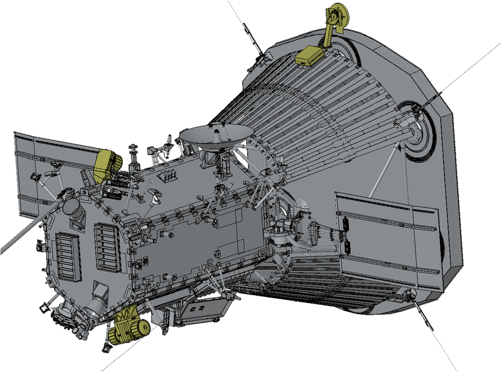
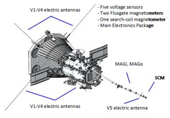
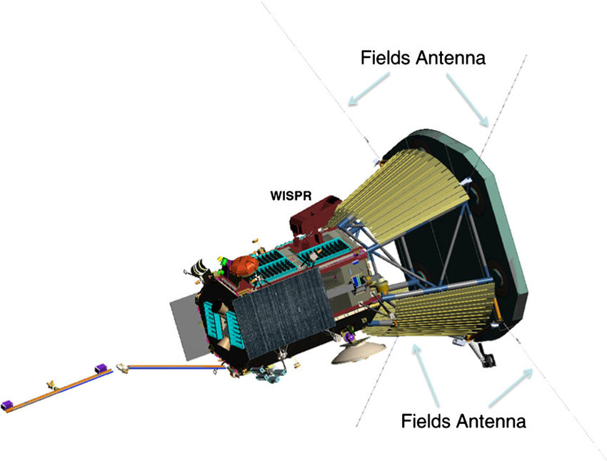
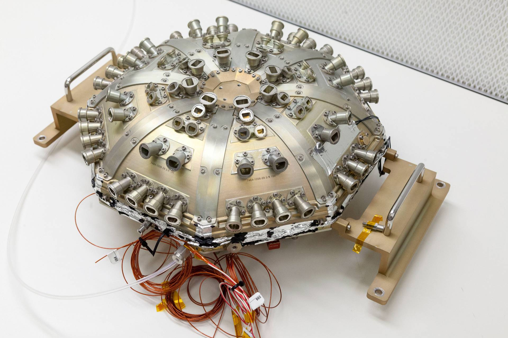

Parker Solar Probe
The Parker Solar Probe has broken records, shared revolutionary data, and is set to do tasks that will be even more extraordinary in the next two years. Being the only spacecraft named after a living person called Eugene Parker, it has come the closest to the Sun, and is going to reach even closer. It has touched the corona, a layer over 180 times hotter than the Sun’s surface, and it has given us key data on how the Sun works, all while researching why the corona is hotter than the Sun’s surface. Here, I am going to explain to you how this spacecraft works, and how this spacecraft was even able to reach this close to the Sun.
How did it reach the Sun
The Parker Solar Probe is going to reach within 6.2 million km of the surface of the Sun, and this distance is 7 times closer than the previous record set by Helios B. For perspective, the Earth is over 148 million km away from the Sun. But, how did it even reach there? Launched aboard the Delta IV Heavy Rocket, which is an expendable, second highest-capacity rocket, it was set to take two gravity assists from Jupiter. If it had done that, although it would have reached closer to the Sun, its working hours would have be very less, while the weight and fuel costs would have been a lot more. Moreover, there would have been an issue with the solar panels, as larger solar panels would have been needed to operate the system with minimal sunlight around Jupiter, and if larger solar panels were used, then they would have been damaged when it reached closer to the Sun. So, instead, it was decided that the Parker Solar Probe will take 7 gravity assists from Venus. This gave it 9 times more working hours, while requiring lesser weight (due to smaller solar panels capable of hiding behind the sunshield - this is duscussed in detail later in the article). Also, to overcome the gravitational force of the Earth and get into the orbit of the Sun, it needed to be travelling at 30 km/sec, which is an immense amount of speed.
The Heat Shield
The heat shield was, not intuitively, an extremely important part of this spacecraft. Without it, there would have been no way to reach the Sun, and no way to keep the instruments safe against a temperature of over a million ˚C.  To create this heat shield, primarily, an 11.4 cm thick carbon foam was used. This carbon foam is 97% air, and since air is an amazing insulator and carbon is capable of resisting high temperatures, this worked like a magic material.
To create this heat shield, primarily, an 11.4 cm thick carbon foam was used. This carbon foam is 97% air, and since air is an amazing insulator and carbon is capable of resisting high temperatures, this worked like a magic material.
After that, a layer of a carbon carbon composite was added, which consisted of graphite and an "organic binder" (Real Engineering). After applying this mixture to each side of the foam, it was heated to very high temperatures to create a pure carbon covering. For the final layer, a white, ceramic coating was added so that the maximum heat would be reflected back outside.
Now, let us talk about the instruments used for collecting the data.
The Solar Wind Electrons Alphas and Protons (or the SWEAP): Their purpose is to measure the solar wind and atmosphere.  These sensors help understand how the corona is heating, hence giving us insight on why it is hotter than the surface of the Sun, even though it is farther away.
- Most of the SWEAP instruments sit on the sides of the probe
- They will Collect ions, electrons, fully ionised hydrogen and helium, and then they will make maps of the number of particles, their speeds and energy and type. These maps can be then interpreted to decipher the solar wind temperature, density, pressure, speed, etc.
- In the shade of the heat shield, there is an object called Span A. It has two instruments (for electron and ions) and they can see the entire sky on that side of the spacecraft. On the other side, there is Span B, which does the same thing but looks behind. Both of them can take a number of electrons coming from any direction, and together, they can look at the entire sky (excluding the part blocked by the heat shield itself).
- Finally, the Solar Probe Cup filters out high energy particles, to measure their speed. Being made of a 100-micron spaced grid, it uses high voltage, and high current grids, to generate electric fields to filter out these particles (since low energy particles will be repelled away). This instrument is made of Tungsten, a material that is conductive and machinable. Since lasers or applying of any type of force couldn’t be used to create such a precise grid (as otherwise, the entire grid would have broken), acid etching was used. Finally, cables made of conductors to supply this high voltage and sustain in such high temperatures were required. Therefore, the cables were made of Niobium C-103, an alloy of Niobium consisting of 89% Niobium, 10% Halfniun, and 1% Titanium, that can resist high frequencies and high temperatures. Sapphire beads were used to ensure the insulation of the Niobium wires, and this Niobium alloy was used to make the external covering also.
It consists of 5 antennas, out of which 4 stick bravely out of the shade of the heat shield. These 4 are also coated with a layer of Niobium C-103, which can sustain high temperatures that these antennas face. These antennas measure the properties of solar wind and the electric fields and frequencies of the corona.  The 5th antenna, which is placed perpendicular to these 4 antennas in the shade of the heat shield, helps measure the electric fields of that region as well, giving a wider, 3-dimensional view of the electric field.
To measure the magnetic field, three magnetometers are used. As the magnetic field changes, a voltage is induced in a circuit. This basic electricity concept is used in the Search Coil Magnetometer (SCM), which can measure the change in the magnetic field depending on the voltage induced. The SCM is capable of measuring the magnetic field two million times per second, mainly focusing on regions near the Sun. The other two magnetometers, called flux gate magnetometers, detect the magnetic field further from the Sun, measuring the change in magnetic fields at a slow rate.
Previously, to measure electric fields, two techniques used to be used (one called the double problem, and the other by measuring plasma and radio waves). The FIELDS instruments combine both of these methods of investigating electric fields; and after measuring the magnetic and electric fields, we can easily calculate the energy flux of the corona (also called the pointing flux).
Wide-field Imager for Parker Solar Probe (or WISPR): It is the only imaging instrument on the Parker Solar Probe.
 It consists of 2 telescopes, which themselves sit between the two antennas at the corner of the heat shield. These image the corona and the solar winds, as the probe enters the corona. On the Parker Solar Probe, this is the lightest instrument present. This instrument only has two requirements, of having a far sight, and of being able to track the structures coming out of the sun and seeing how they shape themselves. It makes it possible for us to see the dust-free region around the Sun (as the Sun’s heat has evaporated this dust). Of course, the biggest problem for this part of the probe was how this imager would withstand so much heat. To overcome this issue, the engineers, instead of placing the imager outside the safety of the heat shield, placed it in a way that the imager just peeks over the heat shield. This led to most of the heat being blocked by the heat shield, which allowed the imager to work in comfortable conditions.
Integrated Science Investigation of the Sun (or ISOIS): The purpose of the ISOIS is to look at energetic particles over a huge range of energies, ranging from tens of thousands of electron volts to a hundred million electron volts
 The instruments in the ISOIS use solid-state detectors, which are basically detectors that, “when a particle passes through these detectors”, deposit its energy upon themselves to let us to be able to measure the energy of the particle. The detectors for the higher energy particles instruments have more layers of the same type of detectors. This lets the particles leave a litte eenrgy on all of these detectors, essentially dividing the load taken by each detector to prevent from an overload of energy. Because of their shape and segmentation, the detector can help you tell which direction the particle came from, the type of particle, and the energy it had, all of which are key aspects of the research the probe has to do. In the lower energy particles instruments, there are solid state detectors along with a thin foil. This foil, when a particle passes thorugh it, emits a detectable electron, which can let us identify “the start timing for the particles.” (Space Physics at Princeton)
Challenges Faced:
The first big challenge was reaching the Sun, which I have talked about at the beginning of the article before. The other challenge, which I briefly mentioned, where the solar panels. If the solar panels get too close to the Sun, they will get damaged due to the excess heat, and hiding them behind the sunshield will lead to no energy production, so none of the instruments on the spacecraft will be able to function. To overcome this issue, the engineers thought of having a secondary set of smaller, specialized solar panels. These secondary solar panels are cooled by the use of water, which is then being pumped through the solar panels and into black radiators, which are attached to the titanium truss below the sun shield. This lets the primary solar panels to hide behind the heat shield when the spacecraft comes too close to the Sun, while allowing the key systems of the probe to function.
Image Credits: UltraMet, ResearchGate, Wikipedia, Princeton
References
- "The Insane Engineering of The Parker Solar Probe." Youtube, uploaded by Real Engineering, 19 February. 2022, https://www.youtube.com/watch?v=pOZhPz92Dic.
- “NASA’s Parker Solar Probe explained in detail.” Youtube, uploaded by SciNews, 9 August 2018, https://www.youtube.com/watch?v=zJo0tIxNLxU.
- “Parker Solar Probe Instruments.” NASA, https://www.nasa.gov/content/goddard/parker-solar-probe-instruments/.
- Dobrijevic, Daisy. “Parker Solar Probe: First spacecraft to 'touch' the sun.” Space.com, 6 May 2022, https://www.space.com/40437-parker-solar-probe.html.
- Priyadharshini. S, K. Pratheepa. “Parker Solar Probe.” Ijert, vol. 6, no. 14, 5 January 2019, https://www.ijert.org/parker-solar-probe.